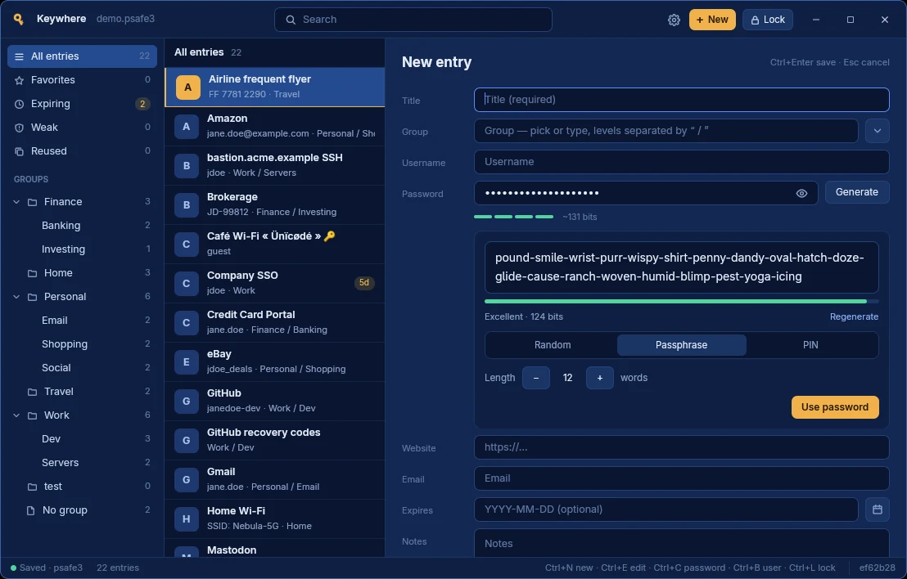
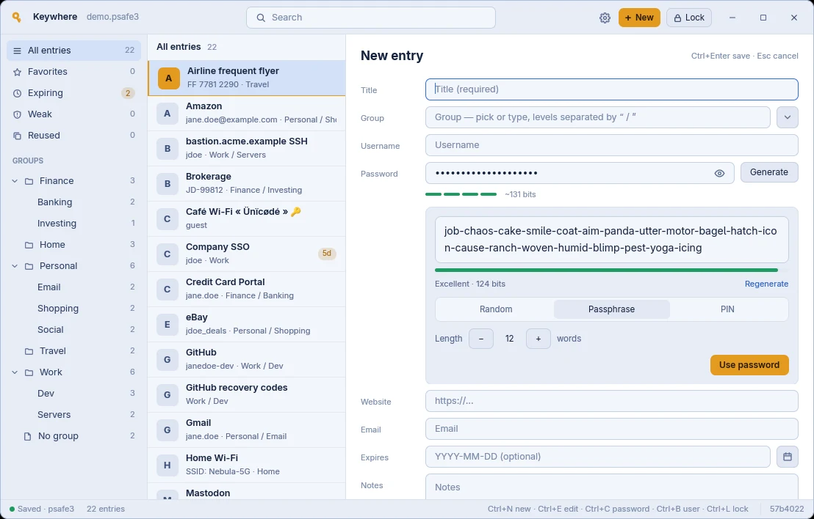
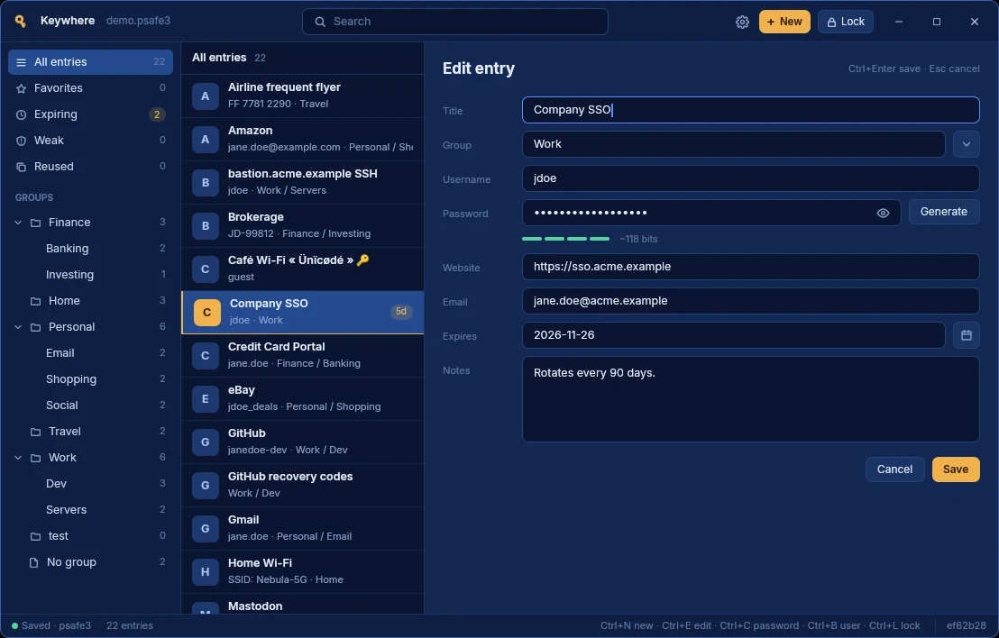
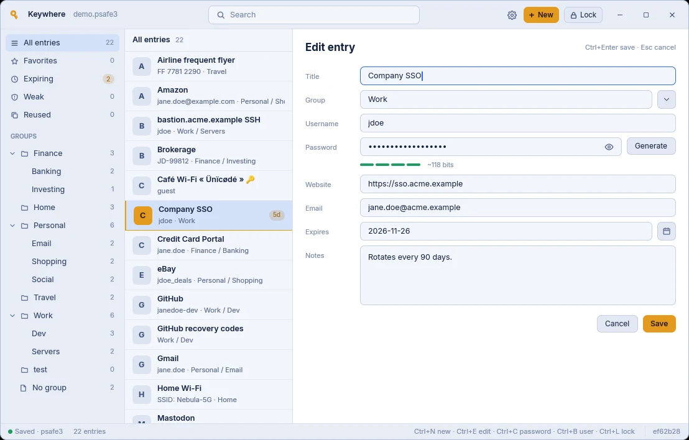
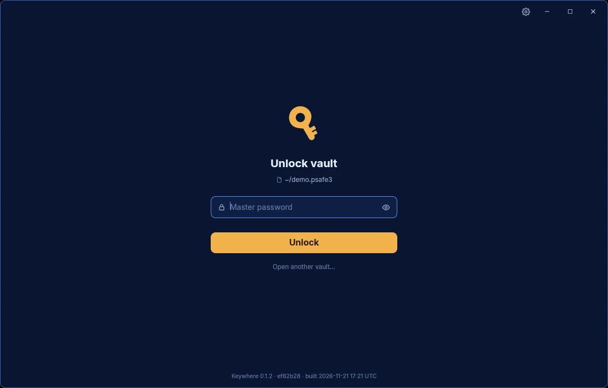
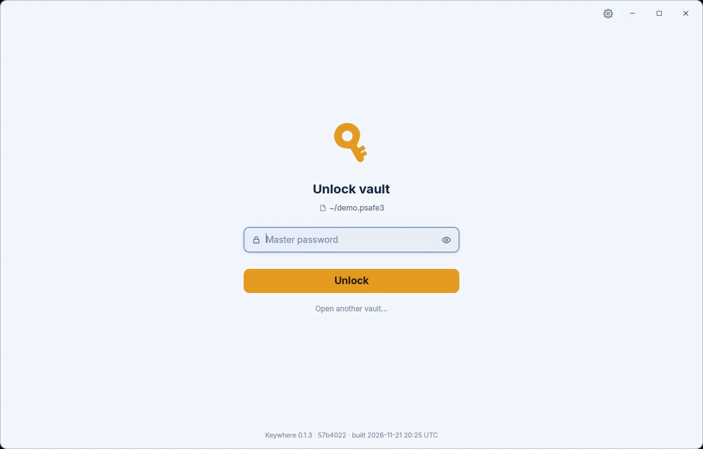

Keywhere opens the .psafe3 files that Password Safe and Password Gorilla use,
and gives them a calm, keyboard‑first home. Your vault is one encrypted file you keep
wherever you like. No cloud account, no subscription, no nags.
The vault is a standard Password Safe v3 file. It opens unchanged in Password Safe and
Password Gorilla, so you can switch apps whenever you like. Keep it on your disk, a USB stick,
or a folder Google Drive, Dropbox or Syncthing already syncs.
Nothing to sign up for
No account, no subscription, no “Pro” upsell. Keywhere doesn't touch the network until you
say yes to update checks, and even then it only asks GitHub about new releases.
Calm and keyboard‑first
Three panes, instant search, and shortcuts for everything you do daily: find an entry, press
Enter, and the password is on the clipboard, which clears itself again.
Features
Everything a vault needs, nothing it doesn't.
Three‑pane browser
Smart views for favorites, expiring, weak and reused passwords, a group tree, instant search, and a detail card with each entry's password history.
Copy that cleans up
Copied secrets are marked “exclude from history” for clipboard managers and cleared after 30 s (5–120 s), on lock and on quit.
Locks itself
After 5 minutes idle (1–60 min or never), when the screen locks and before the system sleeps. Ctrl+L any time.
Password generator
Random passwords, passphrases or PINs, with a strength estimate in bits before you use one.
Safe in a synced folder
Atomic, verified saves with an .ibak backup. Keywhere refuses to overwrite a vault that changed elsewhere and asks you what to do.
Tray and global shortcut
A tray icon with Open, Lock and Quit that never shows entry titles. Bind any key to keywhere --show to jump straight to search.
Password Gorilla v2 files
Opens legacy .dat files and saves them back as v2, so older apps keep working. One click upgrades a copy to v3.
Signed updates
Opt‑in update checks. The AppImage, the macOS app and the Windows portable and per‑user builds update themselves, and only after the download matches a manifest signed with Keywhere's release key. The .deb, .rpm and MSI get a notice with a link.
English and Română
Pick the language and a dark or light theme in Settings, along with auto‑lock and clipboard times. Changes apply immediately.


A new entry with the generator: random, passphrase or PIN, and a strength estimate.


Editing an entry. Ctrl+Enter saves, Esc cancels.


The unlock screen. The master password is the only way in.
Screenshots use a demo vault. They follow the theme you pick at the top of the page.
The story
Built because I needed it.
I wanted two things from a password manager that rarely come together:
freedom and aesthetics.
Freedom meant no vendor lock‑in, no subscription and no account. My answer to
password‑manager services has long been simple: keep the vault file in a cloud‑synced folder
that's mounted locally. Keywhere is built around exactly that. The vault is one encrypted file,
every save is atomic and keeps an .ibak backup, and Keywhere notices when the file
was changed on another device instead of overwriting it.
Aesthetics meant a vault I actually enjoy opening many times a day. The apps that read this
format didn't get there: Password Gorilla is discontinued and its Tcl/Tk interface shows its
age, Password Safe is solid but cluttered, and Strongbox looks great but is macOS‑only and
keeps pushing Pro.
The plan was a Tauri app. Then I got hyped by GPUI, the Rust UI framework behind the Zed editor,
tried it, and stayed. It's still a great experiment, and the UI is vibrant. I like it.
Keywhere is desktop only for now: Linux first, macOS and Windows as previews. A mobile version
was considered and set aside.
— vcostin
Why GPUI
Why GPUI, not Electron or Tauri.
GPUI is the GPU‑accelerated UI framework the Zed editor is built on.
For an app that holds secrets, it has some real advantages, and a few honest costs.
01
No web view, no browser engine
Keywhere is a single native binary, about 17 MB on Windows. There is no HTML renderer or JavaScript runtime inside, which keeps the attack surface small.
02
Drawn by the GPU, in Rust
The interface is rendered with Vulkan on Linux, Metal on macOS and DirectX on Windows. It's fast, and the colours are vibrant.
03
One language, full control of memory
Rust end to end, so secrets can be zeroized. Small patches to GPUI make sure its text‑layout caches don't keep revealed passwords around, and a RAM‑residue test checks it.
The trade‑offs
GPUI is young (version 0.2). Keywhere carries a patched copy for the window icon, keeping the tray alive when the window closes, and clearing caches; each patch is listed in the root Cargo.toml.
Longer builds than a web stack.
No mobile target.
Security
Careful by default, honest about limits.
Keywhere is built against a written threat model.
The short version:
Proven crypto, nothing home‑made The RustCrypto crates (Twofish, CBC, SHA‑256, HMAC) and constant‑time checks. Nothing in the file is parsed before its HMAC verifies.
Secrets don't linger Only the stretched key is kept while unlocked, never the master password. Decrypted fields are zeroized on lock, and freed memory is wiped.
Saves you can trust Every save is written atomically, read back and verified, with the previous file kept as .ibak.
Locks on its own When you're idle, when the screen locks, and before the system sleeps.
Clipboard care Copied secrets are excluded from clipboard history and cloud clipboards where the system allows it, and cleared automatically.
Out of sight The window is excluded from screen capture on Windows and macOS. On recent macOS this doesn't cover every capture API.
Process hardening Core dumps are off and other programs are kept from attaching: ptrace is blocked on Linux, PT_DENY_ATTACH is set on macOS, and on Windows an access list denies memory access and thread injection.
Verified updates The update manifest is signed with minisign (Ed25519) and checked against a public key built into the app. No downgrades.
Run the installer, or put the portable .exe anywhere, even on a USB stick, and run it. Settings go to %APPDATA%\keywhere.
SmartScreen warns on the first start: choose More info → Run anyway. Or unblock the file in PowerShell first:
Unblock-File .\Keywhere-*-windows-x64*
Check before you run
Every release lists the SHA‑256 of each file in SHA256SUMS. Save it next to your
download and check before you allow it to run, especially the unsigned previews.
Linux
sha256sum -c SHA256SUMS --ignore-missing
macOS
shasum -a 256 -c SHA256SUMS --ignore-missing
Windows (PowerShell): run the line for your file, it prints True when the file matches
$f = Get-ChildItem Keywhere-*-windows-*; if (-not $f) { "No Keywhere-*-windows-* file in this folder" }; foreach ($x in $f) { if (Select-String -Quiet -SimpleMatch (Get-FileHash $x.FullName).Hash SHA256SUMS) { "OK $($x.Name)" } else { "FAIL $($x.Name)" } }
Yes. It's open source under the MIT licence. There is no account, no subscription and no paid tier.
Will it open my Password Safe or Password Gorilla vault?
Yes. Keywhere reads and writes Password Safe v3 (.psafe3) files and keeps fields it doesn't know about, so the file stays usable in Password Safe and Password Gorilla. Legacy v2 files (Password Gorilla's .dat) open and are saved back as v2. A banner explains v2's weaknesses and offers Upgrade to v3…, which writes a new .psafe3 next to the original and leaves the v2 file untouched.
How do I use one vault on several computers?
Keep the file in a folder you already sync (Google Drive, Dropbox, Syncthing…). Keywhere saves atomically, refuses to overwrite a vault that changed on disk since you opened it, and honours Password Safe's .plk lock file: while another app has the vault, Keywhere opens it read‑only.
Does Keywhere connect to the internet?
Not until you say so. On first start it asks whether it may check GitHub for new versions. A check is two HTTPS requests to github.com for this repository's latest release; nothing about your vaults is sent. This website, likewise, only asks GitHub for the latest release to show the download links. It has no analytics, no cookies and no third‑party fonts or scripts.
Why do macOS and Windows warn me before the first start?
The macOS and Windows builds are previews and aren't code‑signed yet, so the system asks before running them. The Download section shows how to start them. Check the file against SHA256SUMS first.
Can I unlock with my fingerprint or the system keychain?
No, by design for now: the master password stays the only way in, and nothing derived from it is handed to the system keychain.
Is there a mobile app?
No. Keywhere is a desktop app for Linux, macOS and Windows. Mobile was considered and set aside for now.
Is it ready for my real passwords?
Keywhere is in early development and used daily by its author. The vault engine is tested against Password Safe, and every save keeps the previous file as .ibak. Keep your own backups anyway.